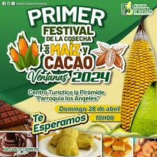
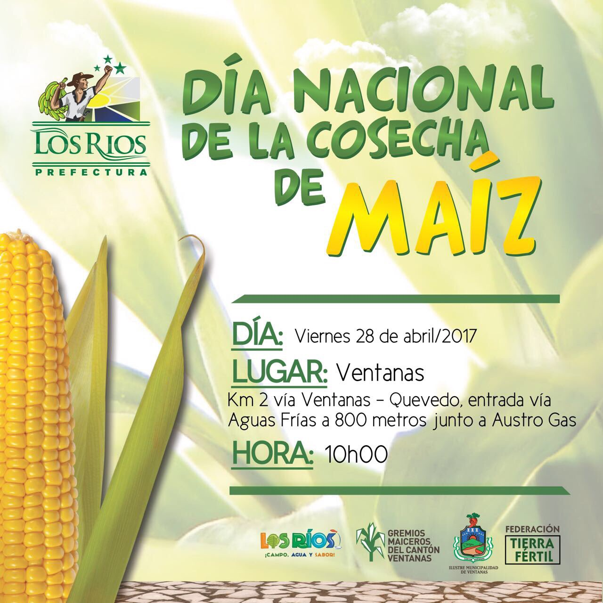

| HOME | GALERÍA | SITUACIÓN GEOGÁFICA | COSTUMBRES | SITIOS TURÍSTICOS |
|---|
El Balneario El Arenal está ubicado en las afueras de la ciudad de Ventanas, en la provincia de Los Ríos. Es un espacio natural
formado por piscinas de agua
dulce provenientes del río, rodeado de vegetación tropical que brinda sombra y frescura. Es muy visitado durante fines de
semana, feriados y especialmente en época de verano.
🌊 Entorno natural
- Piscinas naturales formadas por el río, ideales para nadar y refrescarse.
- Vegetación exuberante que crea un ambiente fresco y relajante.
- Senderos cercanos para caminatas y observación de flora y fauna.
👨👩👧👦 Infraestructura y servicios
- Áreas de picnic y parrillas para compartir en familia.
- Zonas de juegos para niños.
- Espacios verdes para descansar o hacer fotografía de naturaleza.
🎉 Actividades especiales
- En fines de semana y feriados se organizan concursos de natación y música en vivo.
- Eventos comunitarios durante festividades locales como la cantonización y el Día del Maíz.
Las Cascadas del Recinto San Jacinto están ubicadas a aproximadamente 30 minutos de la parroquia Los Ángeles, en Ventanas,
provincia de Los Ríos. Este paraje ofrece un entorno selvático con árboles nativos, frutas costeñas y una caída de agua que se abre paso entre
la vegetación, creando un espectáculo natural de gran belleza
🌄 Entorno natural
- Majestuosa caída de agua rodeada de vegetación tropical.
- Senderos ecológicos para caminatas y observación de flora y fauna.
- Clima cálido y húmedo que realza la experiencia natural.
🍽️ Gastronomía local
- En los alrededores se ofrecen platos típicos como:
- Seco de gallina criolla
- Pescado oreado con verde asado
- Fritada
- Bollo de tilapia
🧘♀️ Actividades recreativas
- Hamacas para descansar junto al sonido del agua.
- Cabalgatas por los senderos rurales.
- Ciclismo en rutas naturales.
- Espacios para fotografía paisajística y turismo de aventura.
Las Ferias del Maíz se celebran anualmente en Ventanas, conocida como la Capital Maicera del Ecuador. Este evento marca el
inicio de la cosecha del maíz amarillo duro y reúne a agricultores, artesanos, cocineros y artistas en una jornada festiva que exalta el valor del
campo y la cultura montubia.
🎪 Actividades destacadas
- Desfile de trajes típicos confeccionados con hojas y granos de maíz.
- Elección de la Reina del Maíz, con coreografías y presentaciones culturales.
- Festival Gastronómico con platos como humitas, mazamorra, tortas de choclo, bollos de pescado y seco de gallina criolla.
- Presentaciones artísticas: orquestas locales, comediantes y grupos folclóricos.
- Exhibición de maquinaria agrícola y productos agroindustriales.
🧑🌾 Participación comunitaria
- Organizada por la Federación Cantonal de Organizaciones Campesinas de Los Ríos (Fecoc), con apoyo del GAD Municipal y la Prefectura.
- Participan asociaciones campesinas, instituciones educativas y empresas privadas.
🏞️ Lugar y logística
- Se realiza en el recinto ferial de Interagro, km 1.5 vía Ventanas–Quevedo.
- También se ha celebrado en el Centro Turístico La Pirámide, parroquia Los Ángeles.
- Se habilitan buses gratuitos desde la Casa Municipal para facilitar el acceso.
|  |  |